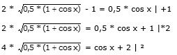
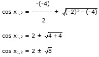

Aufgabe 265 x 2 cos --- - 1 = 0,5 cos x 2

16 * (0,5 + 0,5 * cos x) = cos2 x + 4 * cos x + 4 8 + 8 * cos x = cos2 x + 4 * cos x + 4 |-8*cos x 8 = cos2 x - 4 * cos x + 4 |-8 cos2 x – 4 * cos x – 4 = 0 p, q – Formel: p = -4, q = -4
cos x1,2 = 2 ± 2,8284 cos x1 = -2 + 2,8284 = -0,8284 --> x = 145,9° oder 214,1° cos x2= - 2 – 2,8284 = -4,8284 keine Lösung, |-4,8284| > 1 Da auf dem Weg zur Lösung quadriert wurde, könnten Lösungen hinzugekommen sein. Deswegen muss zwingend eine Probe gemacht werden. Probe: 145,9° 2 * cos (145,9/2)° - 1 = 0,5 * cos 145,9° * 0,2932 – 1 = 0,5 * (- 0,8281) - 0,4136 = -0,414 Lösungsmenge L = {145,9°}